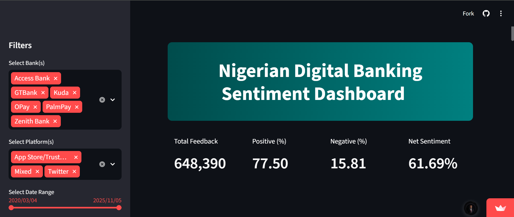

Analyzed 10,000+ customer reviews to uncover key drivers of dissatisfaction in Nigerian digital banking apps.
Worked on analyzing customer feedback from Nigerian digital banking platforms by preparing and merging multiple datasets from social media and review sources. Focused on cleaning and structuring unstructured text data, then interpreting sentiment outputs to uncover patterns in customer experience. Used AI-assisted analysis to identify recurring issues like transaction failures and app downtime. Presented findings through an interactive Streamlit dashboard that allows real-time exploration of sentiment trends across different banks.
Developed a Streamlit dashboard for real-time exploration of sentiment across multiple banks, enabling comparison and quick identification of key issues.

View Live Dashboard